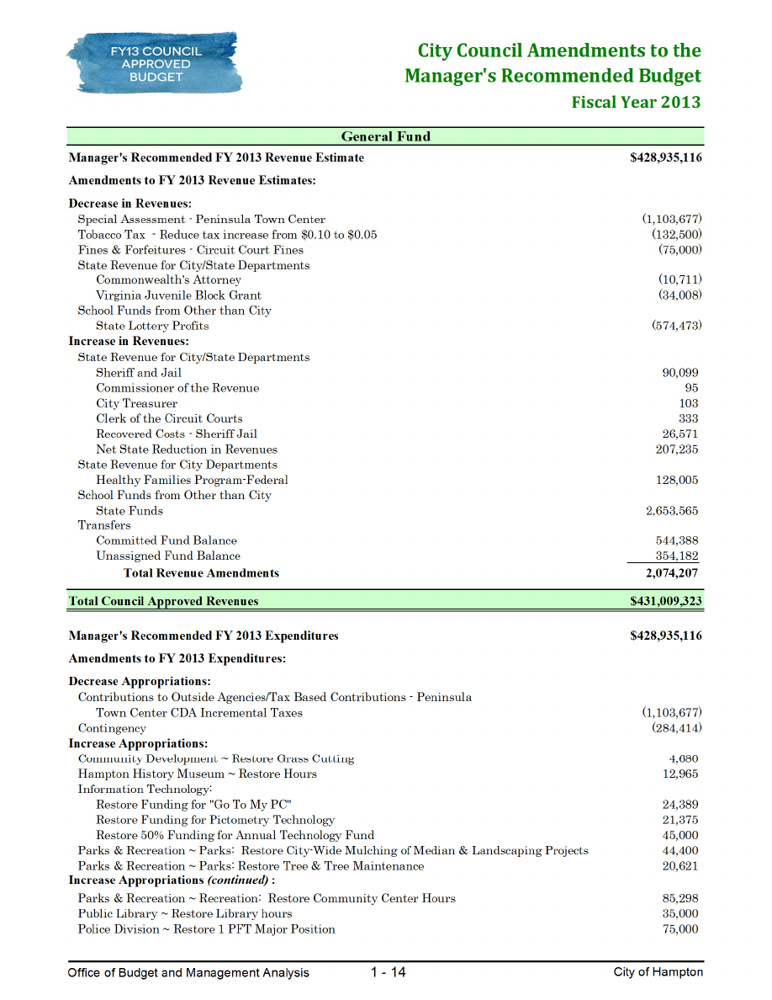
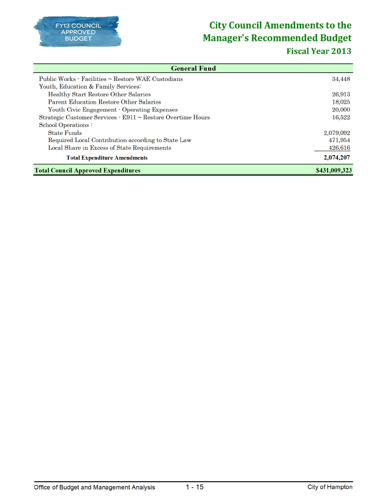

MANAGER’S MESSAGE
Office of Budget and Management Analysis
1 - 1
City of Hampton
April 13, 2012
Mayor Ward, City Council Members and Citizens,
Enclosed you will find the FY 2013 Manager’s Recommended Budget, totaling $428,935,116,
a 0.03% increase over the adopted FY 2012 budget. Of this grand total, the City portion is
$240,061,159 – $3,837,271 less than last year, a 1.57% decrease – and the School portion is
$188,873,957 – $3,982,484 more than last year, a 2.15% increase.
This has been, by far, the most challenging budget in my career with the City. Declining real
estate values (4.5% citywide, all property types) coupled with flat revenue growth in other major
sources have made for a budget that necessitated both continued cuts and minor revenue increases.
Mandatory pension increases passed on by the State put further pressure on limited resources. I am
pleased, however, that we were able to balance the budget without resorting to a tax increase in either
the real estate or personal property taxes. Such an increase would have certainly been justified given
the compounding effect of decreasing housing values for more than three years. A tax rate adjustment
would have produced more revenue and still reduced residents’ overall property tax bills because of
the 6% decline in the residential housing assessments. However, our goal has always been – and will
always be – to avoid such rate changes unless absolutely necessary. A combination of cuts, supported
by public input, and minor adjustments in the meals tax, cigarette tax and motor vehicle licensing fee
have allowed us to keep our real estate tax rate constant at $1.04 per $100 of valuation for the 5
th
straight year. Hampton’s real estate tax rate continues to be one of the lowest of the regional urban
localities.
1.5
1.4
1.3
Proposed FY 2013 Real Estate Tax Rate
(for localities that have not yet released budgets, FY 12 rate is used)
1.27
1.2
1.1
1.0
0.9
0.8
0.7
0.6
0.5
1.11
1.10
1.05
1.04
0.93
Ports mouth
Norfol k
Newport
News
Ches a pea ke
Ha mpton
Vi rgi ni a
Bea ch
MANAGER’S MESSAGE
Office of Budget and Management Analysis
1 - 2
City of Hampton
18
To achieve this, cuts were necessary to most city departments. These cuts may not appear large in
most cases; however, the effect is nevertheless great. After multiple years of cuts, the remaining
manning and operations budget for city departments is very thin. Any cut is painful and has
consequence. It will be important for the Council and citizens to understand, as we move forward, that
responsiveness may be somewhat slower than in the past – and in some case, which I will outline in
more detail later in this message, service levels will change.
To help put this in perspective, I share the following chart that is an excellent proxy for the
efficiency already present in the City budget. As a service-oriented business, the majority of our cost is
personnel. To compare our efficiency, we have looked at the per capita manning for comparable urban
jurisdictions. All employees from all departments and all funds are included to ensure “an apples to
apples” comparison.
Total Positions Per Capita
(per 1,000 population)
20
17.82
17.43
16.83
16
14
12
10
8
6
4
2
0
Ports mouth
Norfol k
Newport
News
15.51
Vi rgi ni a
Bea ch
12.88
12.68
Ha mpton Ches a pea ke
The data clearly establishes our organizational efficiency. Only Chesapeake has fewer staffing
per capita, and then the variation is minor. Other cities have significantly more manpower per capita.
Nevertheless, we knew it would be fiscally irresponsible to make up the nearly $12 million
deficit we faced exclusively with revenue increases. All city departments except police and fire were,
therefore, asked to submit 3%, 5% and 7% budget reduction scenarios. While we were able to avoid
the most drastic of the cuts submitted, a little more than half of the funds needed to bridge the gap were
achieved through internal savings and recommended cuts.
I cannot overemphasize the ongoing importance of citizen input in helping to shape the
direction and magnitude of those cuts. Over the last several months, we have continued the extensive
budget outreach we began two years ago. We added new components, including a random-scientific
MANAGER’S MESSAGE
Office of Budget and Management Analysis
1 - 3
City of Hampton
based telephone survey, and increased the numbers of residents who participated – no small feat given
the past two year’s efforts. We undertook this effort because we understand that a budget should, as
much as possible, reflect citizen values. While all of our services are important, we understood that
cuts would once again need to be made – given the continued effects of the recession – and that any cut
we would offer would be disappointing to some. As a result, we wanted to have as clear an
understanding as possible about what the citizenry tolerance for further cuts would be.
While there is not a perfect correlation between the input received from citizens and our final
recommendations, the citizen’s voices and thumbprints are embedded throughout. Citizens voiced
strong support for maintaining basic city services at current levels although expressed a willingness to
look at varying service hours for facility-based operations. Hence, the departments and services with
the highest support – such as fire, emergency services, police and public works – are largely untouched
in this budget. Cuts are more targeted than in past years, with those cuts directly relating to the areas
citizens expressed a willingness to explore.
In particular, this budget does recommend scaling back service hours at many of our facilities
open for the education and enjoyment of our residents. The History Museum, community centers and
libraries will have some modifications to hours. Libraries will open a little later in the morning (10
a.m. instead of 9 a.m. on Monday-Thursday, and 1 p.m. on Fridays and Saturdays) and close a little
earlier (8 p.m. instead of 9 p.m.). Community Centers will be closed on Mondays during the school
year (September – May). To support the needs of our youth when school is out, we will retain our full
service schedule all summer. The History Museum will also be closed on Mondays. These changes
were supported in public and on-line polling by a clear majority (nearly 70% or more in each of these
cases) of the public.
Other expenditure cuts also aligned with public input. This budget recommends mulching city
and school grounds only once a year (supported by 86% of poll respondents); reducing the planting of
annuals on roadways and medians (supported by 71%); reducing printed materials and using the web
as a primary source of communication (supported by 78%); and, delayed upgrading of software
(supported by 63%). The Citizens Unity Commission was again reduced (supported by 54%), although
in a way that will allow continued services. Due to the retirement of the Executive Director, we were
able to save money by proposing to instead hire a part-time director and/or contract out the
management.
In two cases, the public supported potential reductions, but we opted not to take the cut given
the likely negative consequences of such action. Night and weekend 311 assistance was supported as a
potential elimination by 57% of the public polled. However, this is an area where Hampton uniquely
positions itself to assist residents. Many residents work during the day and are unable to call to request
service and/or information from their jobs – nearly 20% of all 311 call volume comes from these non-
traditional hours. We believe that offering night and weekend service is critical to being a responsive

MANAGER’S MESSAGE
Office of Budget and Management Analysis
1 - 4
City of Hampton
government. Indeed, other cities – including Newport News – are beginning to replicate the Hampton
model. The minor savings we could have achieved were not worth the loss of service to residents who
use the service during evenings and weekends.
Also, residents supported slower turn-around for building permits and inspections. However,
this is an area in which responsiveness can have a long-term negative impact for the image developers,
contractors and residents have of the City. If it is easier to get permits, or inspections, in other cities, it
is likely that businesses and citizens may instead look to neighboring jurisdictions when all else is
equal in terms of investments they are looking to make. Indeed, Hampton already suffers from a less
than stellar image of our Land Development Services division. Reductions in this area would have
been potentially devastating.
To correct this less-than-ideal image, we have spent the last several months reviewing
reengineering recommendations and benchmark communities for possible ways to dramatically
improve customer experience with our Land Development Services functions. The incremental
improvements we have been able to make over the last two years have not been enough to change our
image or service responsiveness, so a major overhaul of operations is now appropriate. Our review of
best practices and a reengineering study conducted with the help of business and residential customers
have established that we do not have the best process. Skill sets and job requirement are significantly
outdated. We also have not kept up with the new technological advances that other jurisdictions are
using to allow on-line processing and review of these land-related permits. Accordingly, this budget
recommends the necessary overhaul to fix these issues. The improvements will cost slightly more
money – some of which will be supported with a new technology fee of $10 per permit application –
however, this change is absolutely necessary if we are to re-establish competitiveness in this critical
area of service. Most importantly, adjusting our service model now ensures that Hampton is able to
maximize development/redevelopment opportunities when the recession is over and both residential
and commercial growth returns. Only by being proactive in these areas can we best work to attract new
business and residents so that current homeowners do not have to pick up larger and larger shares of
city services.
Other similar management changes are recommended in this budget, although none as dramatic
as the Land Development Services overhaul. While looking for possible savings in the budget, we
challenged our team to focus on protecting services Hampton does uniquely well (like 311) and to
focus on how others might better assist us in areas where we are not solely qualified to deliver that
service. Two areas stood out as opportunities to diversify to others who could perform services better
than the City.
Our youth violence prevention efforts are critical to building an even stronger community. It
was appropriate that City invest in gang awareness and prevention efforts. However, we are not
uniquely qualified to do this work. While our Police will continue their role in these efforts – and the

MANAGER’S MESSAGE
Office of Budget and Management Analysis
1 - 5
City of Hampton
grant-funded Youth Connect program will remain – we determined that we did not need a full-time
professional staff member guiding these efforts. Instead, a better use of limited funds would be to
invest in existing grass-roots organizations that need help taking their already successful efforts to
scale. Accordingly, we have proposed elimination of this position and will instead establish a targeted
grant program. We believe this will enable us to reach and impact more young people faster.
Similarly, the City is not uniquely qualified to offer programming and services to our teen
population. Several years ago, we opened a Teen Center. Attendance was less than expected. Although
we have improved participation this year, it is clear that the model for success needs to change. There
are many potential partner programs that have a proven track record at engaging young people
successfully. Rather than continuing a model of city programming at the facility, this budget
recommends that the City role shift to caretaker and scheduler of the building and instead focus on
bringing these partners in to program the facility. This shift both saves money and makes sense.
Still other savings were achieved through the retirement incentive program offered by Council.
In some cases, positions being vacated by retirees are filled but at a lower salary than that paid with the
more senior employee retiring. In other cases, the retirement has allowed us to eliminate or restructure
the position. I have already noted the change to contracted and/or part-time management of the
Citizens Unity Commission (CUC). Our Arts Commission Director also opted for retirement. In lieu of
filling that position with a full-time employee, we will instead contract with the Arts Foundation at half
the cost. This will begin a multi-year transition plan to increase Arts Foundation financial support over
time, allowing the City to decrease its annual contribution. The retirement of one of the four Police
Majors has also allowed us to eliminate one high-level management position as the Chief is
comfortable operating with three, instead of four, Majors.
These changes – coupled with higher attrition allocations to departments, transfers of a handful
of positions to the appropriate special revenue funds and a declining debt service expense – enabled us
to close more than half the initial budgetary gap we faced. Deeper cuts would have been devastating
and, according to polling data, not supported by the majority of the public.
We, therefore, looked to potential revenue to offset the lost revenue from real estate declines.
We have chosen to build a package of adjustments – instead of focusing exclusively on one revenue
source such as the real estate or personal property tax – to support the recurring costs of governmental
service. We believe our package ensures that both residents – and non-residents – contribute to the cost
of general government.
We are first proposing to increase the meals tax by 1%. This rate, if approved, would be
equivalent to the proposed rate for our neighboring locality and closest competitor, Newport News.
The meals tax is assessed on all prepared meals within the restaurants of our community. Eating out is
a discretionary activity, meaning that if one wants to avoid the impact of this minor change, they can

MANAGER’S MESSAGE
Office of Budget and Management Analysis
1 - 6
City of Hampton
certainly opt to do so. Moreover, the impact of a 1% change is negligible. On a $10 meal, the increase
amounts to a dime; on a fancy, $100 meal, the increase is but a dollar. Although the incremental
amount a restaurant goer may pay is small, the sum total of this change is major. A 1% increase
generates more than $2.3 million a year. Because of the many new offerings in Hampton, this tax is
paid not only by Hampton residents but also, and in an increasing amount, by visitors from other
communities.
As we did last year, we also propose to raise the cigarette tax, from the current 75 cents per
pack to 85 cents per pack. This change generates about $265,000 a year for the City and individuals
can avoid paying added costs by changing habits and/or commuting to other, more outlying
communities. Newport News has also proposed raising this rate, so we would remain competitive with
them if we follow suit.
Finally, we have proposed a $5 per year increase in the motor vehicle license fee. This is a flat
amount of $5 per registered vehicle. This fee is paid by residents, businesses and even tax-exempt
property owners, meaning that all Hampton residents (not just those with real estate ownership) will
contribute to closing the budgetary shortfall we face. The $5 per vehicle per year generates close to
$650,000 a year.
Some user fee and permits charges will also change this year, to better account for the actual
costs of providing the various permit reviews and/or inspections. New this year is fire inspection fees
that are standard in other cities. Hampton has historically not charges these fees; however, as they are a
routine cost of doing business throughout the area, we are missing out on having direct customers
cover some of the direct cost of servicing their needs. These fees are earmarked to the Fire & Rescue
Department’s equipment needs. These fees do not impact the average resident.
Because of expensive environmental mandates being imposed on localities by the
Environmental Protection Agency (EPA) and the Virginia Department of Environmental Quality
(DEQ), increases in wastewater and stormwater fees are also required. These fees are isolated in
special revenue accounts, meaning that the revenue can only be used to support activities that meet the
environmental mandates. The wastewater expenses are driven by a Consent Order mandating a
reduction, and eventual elimination, of sanitary sewer overflows. Several years ago, when the Consent
Order was first negotiated, the Council agreed to implement a surcharge on the sewer user fee to both
pay for and isolate these expenses. With increasing obligations, that surcharge needs to be increased
from $0.44 per 100 cubic feet of water consumption to $0.66 per 100 cubic feet of water consumption.
The base rate of $1.48 per 100 cubic feet for general sewer maintenance remains unchanged. For the
typical resident, this rate increase will have a total annual impact of $14.52.
Similarly, the Stormwater user fee will increase to address Total Maximum Daily Load
(TMDL) requirements to limit nutrient and pollution runoffs into the bay that all Hampton Roads

MANAGER’S MESSAGE
Office of Budget and Management Analysis
1 - 7
City of Hampton
7.85
localities are facing. In Hampton’s case, we have aligned these requirements with the input and
recommendations from our Citizen Waterway Management report – meaning that we can get “double
bang” for the dollars invested. Nevertheless, these new investments cost money that will force us to
raise our current rate of $4.60 per month to $6.41 per month, a total increase of $1.81 per month or
$21.72 per year. The commercial property rate also increases by the same flat amount per ERU
(equivalent residential unit, which in Hampton is 2,429 sq. ft. of impervious area).
Even with these changes, our rates will remain very competitive for urban localities. Sewer user
fee and Stormwater user fee comparisons follow.
Residential Sewer Charges
(per 100 cubic feet of water consumption)
10
8.95
8
6
4
2
0
3.51
3.26
2.79
1.92
Ches a pea ke Ports mouth Norfol k
Newport
News
Ha mpton
Hampton is significantly lower in residential sewer charges, even with the proposed rate change.
Similarly, Hampton will remain the lowest stormwater user fee, even after proposed increases.
10
9.61
9
8
7
6
5
Vi rgi ni a
Bea ch
Stormwater Fees
per ERU of 2,429 sq ft
8.7
8.25
7.45
Norfol k Ports mouth Ches a pea ke Newport
News
6.41
Ha mpton
MANAGER’S MESSAGE
Office of Budget and Management Analysis
1 - 8
City of Hampton
Altogether, these changes still represent a tax-break for the average resident. Assuming the
average residential valuation decrease of 6%, a typical homeowner with a $200,000 home and two
vehicles would see the following net change in the amount of taxes and user fees paid next year.
Tax/Fee
Annual Impact
from Change
Real Estate Decrease
of
6%
average decline in housing value
for $200,000 home
($124.80)
$5 per vehicle increase in motor
vehicle licensing fee, two vehicles
$10.00
$1.81 per month increase in
stormwater user fee
$21.72
$0.22 per 100 cubic feet increase in
sewer user fee
$14.52
TOTAL IMPACT ON RESIDENT
($78.56)
I am pleased that we were able to provide this type of additional savings – the above example of
$78.56 savings in taxes and fees for the next fiscal year – to the taxpayer given the extraordinary
conditions we faced.
Again, this has not been without pain. Critical city services, as noted above, are being curtailed
and reduced. The local school contribution has also declined as required by the local funding formula.
This funding formula was developed nearly fifteen years ago, and has always been honored by both the
City and the School System. Under the formula, 61.83% of all residential real estate, personal property
and utility tax revenue are given to the School System as its “fair share” of the local revenue stream,
while the remaining amount is left to the City budget to support other core needs. Had we ignored this
historical assignment of funds, the City cuts (or revenue increases) would have been more severe. Even
with this reduction in the formula-based local contribution, the School System budget does grow by
nearly $4 million while the City budget declines by a nearly like amount. The School System has asked
for consideration of a dedicated tax increase to offset the loss of local contribution necessitated by this
formula – although indications are that a State budget compromise may mitigate the need for such an
increase. As of the writing of this budget overview, details of the State budget compromise are not

MANAGER’S MESSAGE
Office of Budget and Management Analysis
1 - 9
City of Hampton
available. Accordingly, I have not included the School request in my recommendation. Council and
School Board conversations will continue once more details emerge.
Thus far, I have focused on the major reductions or changes in management approach
contained in this budget. However, there are a few enhancements of which I am particularly proud.
Last year, we began a multi-year effort to convert the HELP Night’s Welcome Program from a winter-
based program to a year-round effort. This successful community partnership was expanded in FY
2011 to offer shelter on days and evenings during extreme weather events. In FY 2012, we added four
additional weeks of service. HELP agreed to work with us to add a month of service each fiscal year
until we were able to assist this vulnerable population all year long. In keeping with this commitment,
we have added the funds ($11,000) necessary to expand service in FY 2013.
This budget also contains a substantial investment in our Waterways. Building on past
investments – such as the $4.1 million Factory Point restoration/Back River dredging and the $1.2
million Hampton River dredging – Council has approved a $19 million five-year plan for addressing
recommendations made by the citizen Waterways committee. Included in the capital budget in FY
2013 is nearly $3 million for:
Watershed studies that identify area-specific mitigation solutions
Implementation of watershed study findings
Salt Ponds maintenance dredging— now on three-year cycle
A Best Management Practices Plan to meet Bay cleanup mandates, specifically Phase II WIP
consistent with the TMDL two-year milestone requirements
Use of the LIDAR data to drive program prioritization – develop study of current and future
probable tidal flooding impacts
Study of the Transfer of Development Rights and/or Purchase of Developmental Rights to
promote the creation/preservation of natural areas in environmentally sensitive or flood prone
areas
Support for the regional sediment management plan
The operations budget in the general and Stormwater funds will also support:
Hiring an experienced grant-writer to obtain public, non-profit, foundation and private funding
for implementation needs
Staff support to help organized and support citizen advocacy groups/grass-roots lobbying
efforts to obtain funding sources such as land conservancy tax credits, site sponsorships and
commercial marketing to implement the shoreline management program
Enhanced public programs to educate the public on the value and benefits of shoreline
protection

MANAGER’S MESSAGE
Office of Budget and Management Analysis
1 - 10
City of Hampton
More effective programs for warning those living in areas in which imminent flooding is
anticipated just prior to the arrival of bad weather
Staff support to identify easements and develop easement language to accomplish protection of
shorelines where there is a willingness to do so and to identify methods of enforcement of
existing regulations utilizing non-law enforcement agencies
All of these capital and operating initiatives are directly responsive to the Council’s continued
commitment to protecting and enhancing our community waterways. I believe it is significant that we
have been able to address so many initiatives in a very fiscally constrained budget year.
Finally, I would like to address impacts on the workforce of these budgetary choices. The most
challenging aspect of this budget is the impact on our workforce. Although the budget reductions we
have made will have minimal impact on the workforce, any loss of positions is difficult when the
organization is so thinly manned. The total net loss of positions in this budget is ten (10) permanent
full-time positions. Many of these are vacant, and for those which are not, we should be able to find
alternative placements elsewhere in the organization. I am encouraged that, through our continued
management of vacant positions and retirement incentives, we already have many open positions in
which impacted employees may potentially be placed.
Our remaining workforce deserves much credit for their tireless dedication and their
willingness to “do more with less” over the last three years, during which they did not receive a pay
increase. Whether it is the “big” things (like clearing our community after natural disasters) or the
“little” things (like the day-in and day-out service delivery they execute most times so flawlessly), the
workforce continually excels.
It had been my hope to provide a long-overdue and well-deserved base salary increase this
year. Unfortunately, a State mandate from Richmond has again made this impossible within the fiscal
constraints we face. The General Assembly has mandated that local employees begin to pay a 5%
share of their retirement benefit. While no one disagrees in principle that employees should contribute
to their retirement package, the 5% share would represent a pay cut – on top of three years with no pay
increases – that is just too much to ask employees to bear. The General Assembly has thus mandated a
5% increase in pay for employees, although 5% does not offset the additional costs employees must
bear as that added increase comes with FICA taxes for both the City and the employee. To ensure that
our employees do not lose pay, the City must add an additional $1.7 million to the budget to give the
employees a full offset of this change. This pay adjustment will only keep employees constant in their
tax home pay today, so although the 6% salary adjustments sounds like a good deal for employees, it
will not give them additional take-home pay.
Had we not been forced to spend this money just to make employees whole, the $1.7 million
would have been sufficient to give a merit-based pay adjustment. With these funds now being

MANAGER’S MESSAGE
Office of Budget and Management Analysis
1 - 11
City of Hampton
consumed to deal with the VRS offset issue, there is not sufficient recurring revenue to add to the base
salary increase. Instead, I am proposing a compensation package made up of one-time monetary and
non-monetary incentives.
The monetary component of this package builds on – but modifies – the performance payment
we gave to employees last year. Last year, permanent full-time employees (who had a 3 or higher merit
rating) received $500, after taxes, and permanent part-time/WAES (also with a 3 or higher merit
rating) received $250. The payment was given in one-lump sum in the first paycheck of the year. This
year, I am proposing we build on this structure and provide our employees the opportunity to earn up
to $1,000, after taxes. This amount is being suggested to ensure that employees earn more than they
did last year.
Our performance payment would be split into two different payments, at the request of many
employees, and would be tiered to differentiate between the performance ratings achieved on the merit
review. For permanent full-time employees garnering a rating of 4 or 5, the $1,000 one-time payment
would be offered, with half in July and the other half in December. For permanent full-time employees
earning a 3 merit rating, the one-time payment would be for a total of $750, again with half in July and
the other half in December. Permanent part-time/WAE employees would be eligible to earn $250,
assuming they have a rating of 3 or higher.
In so structuring this compensation to employees, we are focusing on getting more pay in the
pockets of our lower-salaried workers. Employees making less than $50,000 a year net more funds
from this approach than they would with a 2% cost of living or merit-based increase. Moreover, by
providing the funds in two checks over the course of the year, instead of over 26 pay periods, the
effective buying power of the money will be stronger, sooner.
This performance payment is being funded out of one-time funds available from our fund
balance, which currently has funds in excess of our AA+ bond rating standard of 10% of total budget.
Much of this excess balance has been created over time through the careful savings on the part of
departments and employees, including leaving jobs vacant longer and taking on additional tasks, so it
is fitting that we return a portion of those funds to our employees.
While I believe the combination of the VRS salary offset and the performance payment will go
a long way in terms of addressing the immediate needs of our workforce, I believe some additional
non-monetary incentives are also appropriate. In particular, getting time and space away from a
workplace that demands more and more each year can be beneficial for both the employee and our
workplace productivity. Accordingly, I am proposing that we award our employees with four extra
“personal days” to use – one each quarter, that must be used or lost – so that they can get a much
needed break away from the job site. By having these “personal days”, employees will be able to take a
day off a quarter to deal with personal/family needs (such as completing taxes, attending parent-

MANAGER’S MESSAGE
Office of Budget and Management Analysis
1 - 12
City of Hampton
teacher conferences, etc.) without having to take away from much-needed vacation time. These
additional days are a one-time extra benefit for having done such an admirable job over the last several
years.
I also propose we give our employees access to health and fitness benefits. Employees have
asked us to consider allowing free use of the community centers and/or providing reduced/free access
to private fitness centers so they can both save money and live healthier lives. This is something I plan
to continue investigating. At a minimum, though, I do believe we should allow our employees’ access
to our community centers, as healthier employees will ultimately reduce our health care expenses.
Last but not least, I have also included funding to restore our tuition assistance program which
was suspended several budget cycles ago. Our employees want to continue to invest in their education
and technical skill set. Our tuition assistance program allows them to do that; and, as they do, we get
an even more skilled and knowledgeable workforce. This investment in our employees will pay many
dividends. I am pleased we were able to find the funds to restore this critical program.
While I know employees would have preferred a recurring salary increase, on top of the VRS
offset, I believe this combination of monetary and non-monetary incentives will demonstrate our
collective appreciation of their continued efforts and dedication.
I would be remiss if I did not note that, even as we go about the process of adopting the FY
2013 budget, staff is already looking ahead to FY 2014 and beyond. We endeavored to make our
balancing decisions fiscally responsible not only for this year but also for the future. I believe we have
honored this need in virtually every recommendation we made. However, we have continued our
limited use of one-time revenues that while prudent now, MAY cause challenges in the future.
Looking ahead, I plan to continue our dialogue with both the School Superintendent and the Newport
News City Manager about potential joint purchasing and/or service delivery opportunities. Already
these conversations offer much promise on enhancing citizen service delivery without adding cost to
an already strained budget. We also continued to explore managed competition, as a way of
demonstrating existing efficiency and value for our customers. While I doubt that there will be savings
to be achieved – indeed, I expect our city departments to be highly competitive in the exploratory bid
process – I am hopeful that by putting our services to the test, we will prove our efficiency and cost
effectiveness, thereby clearly demonstrating the need for future reinvestment in city services.
Nevertheless, as we look forward, we cannot continue to cut our city departments and hold the
line on revenues such as the real estate tax that are declining without adjusting the rate to ensure that
residents at least pay the same in taxes one year to the next. Our citizen engagement efforts show that
the majority of residents understand and support this. I am pleased we were able to avoid such rate
adjustments this year; but, as we look forward, we need to understand that it is not permanently
avoidable.
MANAGER’S MESSAGE
Office of Budget and Management Analysis
1 - 13
City of Hampton
In closing, as previously stated, this budget required cuts, new ways of doing business and
minor tax/fee increases. I truly believe we have made the rough choices we were called to make in the
least damaging way possible and in a way that is respectful of the resident input. I want to publically
acknowledge and thank a wonderful group of department heads, assistant city managers and budget
team for ensuring that this proposed budget accomplished these goals.
I must also highlight a larger group of employees who two years ago helped me shepherd in a
whole new level of civic engagement around the budget process. This year, that same team enhanced
our “I Value” campaign. Our time in the community has been incredibly uplifting and insightful. To
demonstrate the impact of the citizen comments on this budget in an even more overt way, you will
find that this budget document continues to feature the names, voices and comments of our citizens.
They have helped us to better illustrate for you that this budget is indeed a reflection of community
values. I trust the City Council and the community will enjoy and appreciate these expressions as much
as I do.
We look forward to working with each of you to better understand this budget and its impacts
on our community and workforce in the coming weeks. As always, we stand ready to assist you and
the community in your deliberations.
Sincerely,
Mary B. Bunting, City Manager

Manager's Recommended FY 2013 Revenue Estimate
$428,935,116
Amendments to FY 2013 Revenue Estimates:
Decrease in Revenues:
Special Assessment - Peninsula Town Center
(1,103,677)
Tobacco Tax - Reduce tax increase from $0.10 to $0.05
(132,500)
Fines & Forfeitures - Circuit Court Fines
(75,000)
State Revenue for City/State Departments
Commonwealth's Attorney
(10,711)
Virginia Juvenile Block Grant
(34,008)
School Funds from Other than City
State Lottery Profits
(574,473)
Increase in Revenues:
State Revenue for City/State Departments
Sheriff and Jail
90,099
Commissioner of the Revenue
95
City Treasurer
103
Clerk of the Circuit Courts
333
Recovered Costs - Sheriff Jail
26,571
Net State Reduction in Revenues
207,235
State Revenue for City Departments
Healthy Families Program-Federal
128,005
School Funds from Other than City
State Funds
2,653,565
Transfers
Committed Fund Balance
544,388
Unassigned Fund Balance
354,182
Total Revenue Amendments
2,074,207
Total Council Approved Revenues
$431,009,323
Manager's Recommended FY 2013 Expenditures
$428,935,116
Amendments to FY 2013 Expenditures:
Decrease Appropriations:
Contributions to Outside Agencies/Tax Based Contributions - Peninsula
Town Center CDA Incremental Taxes
(1,103,677)
Contingency
(284,414)
Increase Appropriations:
Community Development ~ Restore Grass Cutting
4,680
Hampton History Museum ~ Restore Hours
12,965
Information Technology:
Restore Funding for "Go To My PC"
24,389
Restore Funding for Pictometry Technology
21,375
Restore 50% Funding for Annual Technology Fund
45,000
Parks & Recreation ~ Parks: Restore City-Wide Mulching of Median & Landscaping Projects
44,400
Parks & Recreation ~ Parks: Restore Tree & Tree Maintenance
20,621
Increase Appropriations (continued) :
Parks & Recreation ~ Recreation: Restore Community Center Hours
85,298
Public Library ~ Restore Library hours
35,000
Police Division ~ Restore 1 PFT Major Position
75,000
City Council Amendments to the
Manager's Recommended Budget
Fiscal Year 2013
General Fund

City Council Amendments to the
Manager's Recommended Budget
Fiscal Year 2013
General Fund